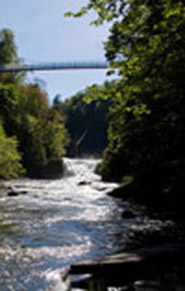
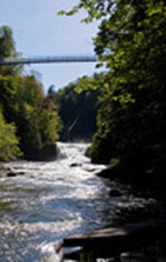
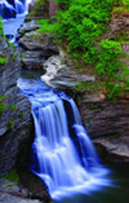
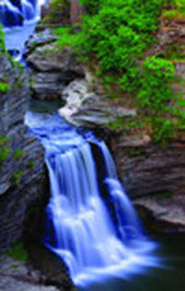

Pronounced (Tuh-GA-nick), the name is believed to have been derived from the Algonquian Taconic (“in the trees”) or Taghkanic (after a Lenape chieftain killed in battle nearby). The falls carves a 400ft deep gorge through layers of sandstone, shale and limestone that were once the bed of an ancient sea. With a 215 foot plunge, this waterfall stands three stories taller than Niagara Falls.
Trail Info:: There are multiple hiking trails that provide views of the fall and the gorge. Gorge Trail, 0.75mi along Taughannock Creek to the base of the falls. Easy. South Rim Trail, 1.125mi. Moderate. North Rim Trail, 1.5mi. Moderate.
Directions from Ithaca: Take Rt. 89 north 8mi to Taughannock Falls State Park. The gorge and hiking trails are on your left. For an easier view, turn left on Taughannock Park Road and follow the signs to the overlook above the falls.

 



 
